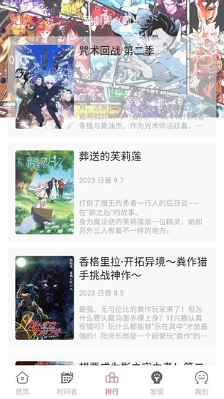

GirigiriAPP 踩过的四个坑——搜不到、不同步、空白、卡顿
GirigiriAPP 看着简单其实藏着几个容易踩的小坑。搜索搜不到、多设备不同步、分区空白、播放卡顿，每个都有现成的解法。
GirigiriAPP官网主打动漫追番，是我手机上装得最久的应用之一——日更追番、漫画补旧漫、多线路切换都挺顺手。但说实话，它不是那种"打开就会用"的 app——我第一次遇到搜索返回空列表时以为是服务器挂了，跑去反馈才发现是自己搜错了译名。这篇把我踩过的四个真实坑整理一下，每个都讲清楚怎么回事、为什么会这样、以及下次遇到时怎么救。

坑一：搜索搜不到，以为内容库里没有
症状：在搜索框敲完关键词，等了几秒出来一个「没有找到相关内容」的空列表。
我第一次遇到是搜一部刚开播的新番，打了官方译名的全名，结果空列表。反复试了三次，以为是应用还没同步上新内容，索性放弃了。后来在热榜里看到这部番，点进去一看，它确实在——只是我打的译名少了一个字。
原因：Girigiri 的搜索引擎对拼写比较敏感，而且它不做模糊匹配。日语名的中文译变体又多（比如《间谍过家家》早期有人译成《间谍家家酒》，《海贼王》旧译《航海王》），用户搜错一个版本就会搜不到。另外，新番刚入库时搜索引擎索引可能有延迟，分类库里已经能看到了，但搜索还没跟上。
解法：三步就能确认是自己的问题还是真没内容。
第一步，换关键词——正式名、常用俗称、角色名都试试。记得主角名字的话，用角色名搜反而更稳。
第二步，换类型关键词试试不记得名字只记得题材的情况。搜「机甲」「校园」这类题材词，然后在分类页面用地区加题材组合筛选，虽然慢一点，但不容易漏掉。
第三步，直接去分类里找。退出搜索，进分类页面选对地区分区（日漫、国漫、美漫），用题材标签进一步过滤。这个入口绕开了搜索引擎的索引延迟，新入库的作品在分类里能先看到。
坑二：多设备不同步，以为数据丢了
症状：手机上刚关注了一部番剧，打开平板的书架却没看到；手机上看到第 5 集，平板上还停在第 3 集。
我同时在手机和平板上用 Girigiri，之前用一个番茄钟追番，手机上看完一集顺手点了关注，换平板时发现书架里没有。第一反应是账号没登录好，退了重登一遍，书架空了三秒钟然后重新加载——其实刚才只是同步有延迟，不是真的丢了。
原因：同步延迟几乎都是正常现象，不是 bug。Girigiri 的云端同步不是实时推送，而是定时触发，两台设备同时在做操作时偶尔还会产生数据冲突（比如两台同时改书架）。另外，离线缓存内容是纯本地文件，跨设备不同步——手机上缓存了 10 集番剧，平板上不会自动出现那 10 集缓存，这个是设计如此，不是同步失败。
解法：别上来就退出重登，先做最轻的操作。
打开书架页面下拉触发手动刷新，等两三秒看数据有没有更新。历史记录页面同样下拉刷新。刷新后数据变一致了，就是之前只是没及时同步而已。
手动刷新没用的话，再考虑退出重登——注意只在不同步的那台设备上退，不要两台都退。退完等书架变成本地数据了再重新登录同一个账号，数据会从云端重新拉取下来。这是最彻底的同步方式，几乎所有延迟问题都能靠这一步解决。
还要确认两台设备登的是同一个账号。我之前帮朋友排查过，他手机登了主号、平板登了另一个号，自己没注意到，这是同步失败的第一大原因。更多同步排查的进阶思路可以看GirigiriAPP文档。
坑三：某个分类分区显示空白，以为平台没内容
症状：进美漫、韩漫分区，或者某个冷门题材标签的分类页，作品列表是空的，显示「暂无内容」或一片空白。
我第一次进韩漫分区时就是一片空白，以为 Girigiri 不做韩漫，后来去应用商店翻评论才看到有人说韩漫分区内容少但不是没有，过了两周再打开果然出来了几部。
原因：Girigiri 的分区内容量本来就有差异——日漫和国漫更新快，美漫和韩漫更新频率低，纯机甲、纯治愈这类冷门题材暂时没有入库作品也正常。另外，旧版本 app 有过 bug 导致特定分区加载失败，清理缓存或更新版本就好了。
解法：先做最轻的排查，不要上来就卸载重装。
下拉当前分类页面触发手动刷新——如果是临时加载问题，刷新后就能出来。还是空的话，切换一下网络（WiFi 和流量互切），再彻底退出 app 重开。
清理缓存也值得一试。进设置，找存储管理，清临时文件，然后退出重开。临时文件堆积偶尔会卡死某个分区的数据请求。
以上都试过还不行，去官方下载渠道或应用商店看一眼有没有新版本。旧版本的 bug 导致分区异常的情况不是没出现过，升级到最新版通常能解决。
真正确认这个分区暂时没内容也不用慌，平台会持续补充。日漫新番基本当季同步，国漫也很快，美漫和韩漫更新慢一些但不会停。等几天再看就行。
坑四：播放卡顿或画质不够，不知道可以切源
症状：默认播放源加载慢，转了半天圈圈；或者想看 4K 但当前源最高只到 1080P。
我之前看一部老番，默认源的画质只有 720P，以为这部番就这个画质，凑合看了两集。后来偶然在菜单里看到播放源切换，换了另一个源，同一片段出来了 1080P。那瞬间感觉之前两集白看了。
原因：Girigiri 对接了多个播放源，每个源的稳定性、速度、画质都不一样。默认源是综合体验最好的，但不一定在所有场景下都是最优选择——某个老番在默认源上画质低，另一个源可能有更好的版本；默认源在你当前网络环境下慢，换个源可能就流畅了。多播放源的设计目的就是容错，但很多人不知道这个入口存在。
解法：在播放界面右上角或菜单里找到「播放源」或「线路」入口，点进去看当前可用的所有源，选一个试试。切换时会重新加载当前集，已播放的进度会重置，所以尽量在开始播放前就选好源。
切换多播放源是应急手段，不是每次都要选。正常追番用默认源就够了，遇到问题再切——比如加载超过 10 秒还没开始、画质不支持你想要的档位、弹幕不显示、或者某个源因为版权原因看不了特定番剧。这几种情况里，切个源大概率能救回来。
防坑清单
- 搜索搜不到先换关键词（正式名→别名→角色名），绕不开就走分类入口找，别直接放弃
- 多设备不同步先下拉刷新，别上来就退出重登，离线缓存本来就不同步
- 分区空白先刷新、切网、清缓存，真没内容就等几天，不要反复卸载重装
- 播放卡顿或画质不够就切源，入口在播放界面的菜单里，开始播放前选好避免进度重置
最后说一句
GirigiriAPP 看着界面干净，其实后台做了不少容错设计——搜索绕不开分类入口、同步有手动刷新兜底、播放源随时能切。知道这几个坑之后，这软件其实相当省心。